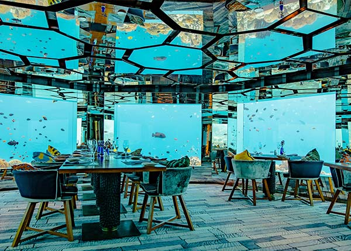
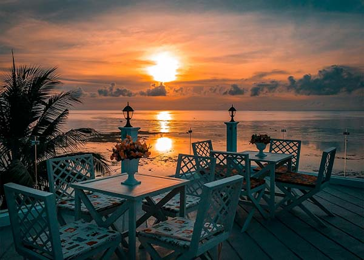
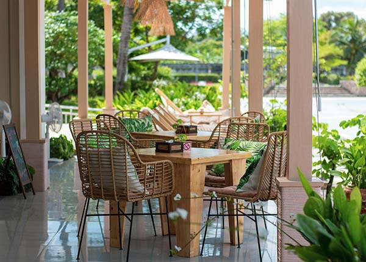
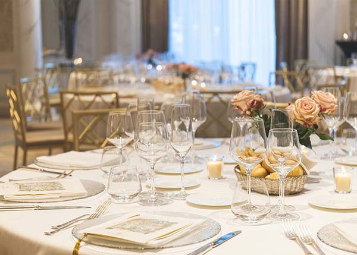

A Culinary Journey
Indulge in a diverse range of dining experiences at Shangri La Beach Resort. From elegant fine dining to casual beachfront bites, our restaurants and bars offer something to tantalize every taste bud and create unforgettable culinary moments.
The Beach House - Fine Dining with Ocean Views
Experience the epitome of culinary excellence at The Beach House. Our signature restaurant offers breathtaking panoramic ocean views, creating a romantic and sophisticated ambiance. Our talented chefs craft exquisite dishes using the freshest locally-sourced seafood and premium international ingredients. Indulge in innovative flavor combinations and impeccable service for a truly memorable fine dining experience. The Beach House is perfect for special occasions or a luxurious evening out.
- Cuisine: Fine dining, Seafood, International
- Ambience: Elegant, Romantic, Oceanfront
- Dress Code: Smart Casual
- Reservations Recommended
The Sand Bar - Relaxed Beachront Grill
For a more casual and laid-back dining experience, head to The Sand Bar. Situated right on the beach, this vibrant grill offers a relaxed atmosphere where you can enjoy delicious food with your toes in the sand. Savor grilled specialties, fresh salads, and satisfying sandwiches, all while soaking in the sun and enjoying the ocean breeze. The Sand Bar is the perfect spot for a casual lunch, a refreshing afternoon snack, or a relaxed dinner under the stars.
- Cuisine: Casual, Grill, Seafood, American
- Ambience: Relaxed, Beachfront, Informal
- Dresscode: Casual
- No Reservations Required
The Poolside Cafe - Refreshments and Light Bites
Stay refreshed and energized without leaving the poolside at The Poolside Cafe. This convenient and casual spot offers a variety of light bites, including salads, wraps, and snacks, as well as a wide selection of refreshing beverages, from tropical cocktails to chilled juices. It's the perfect place to grab a quick and tasty meal or a cool drink while enjoying the sun and the pool.
- Cuisine: Casual, Light Bites, Snacks, Beverages
- Ambience: Relaxed, Poolside, Informal
- Dress Code: Casual
- No Reservations Required
The Lobby Lounge - Sophisticated Cocktails and Ambience
Unwind and socialize in the elegant setting of The Lobby Lounge. This sophisticated lounge offers a curated selection of handcrafted cocktails, fine wines, and premium spirits. Enjoy light appetizers and small plates in a stylish atmosphere, often accompanied by live music in the evenings. The Lobby Lounge is the perfect place to start your evening, enjoy a nightcap, or simply relax and soak in the refined ambiance.
- Cuisine: Beverages, Light Appetizers
- Ambience: Sophisticated, Relaxed, Live Music(select evenings)
- Dress Code: Smart Casual
- No Reservations Required
Other Dining Options
- Room Service: Enjoy the convenience of dining in the comfort and privacy of your own room with our extensive room service menu, available 24 hours a day.
- Buffet Breakfast: Start your day with a sumptuous buffet breakfast featuring a wide array of hot and cold dishes, fresh fruits, pastries, and more.
- Special Dietary Options: We are committed to accommodating your dietary needs. Please inform us of any allergies or dietary restrictions, and our chefs will be happy to prepare customized meals for you.